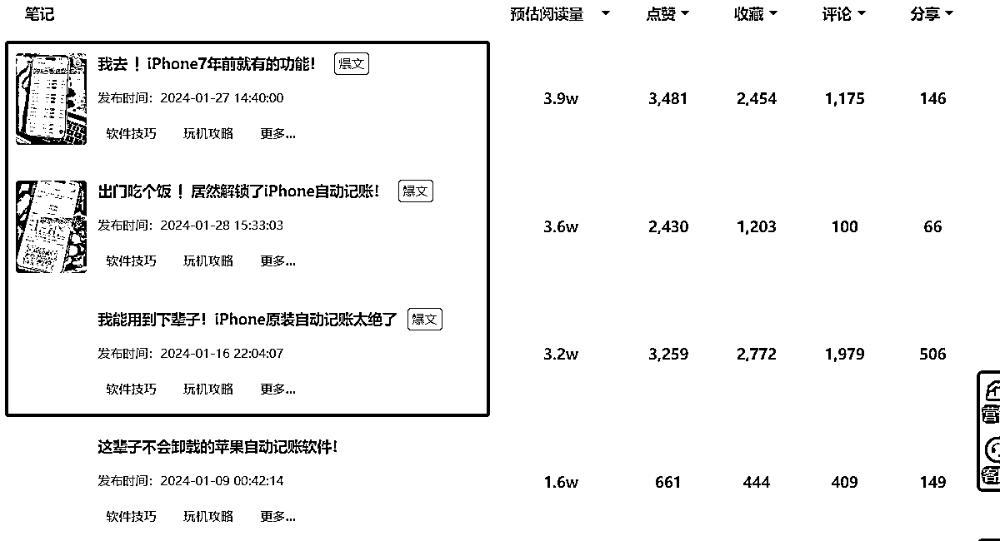
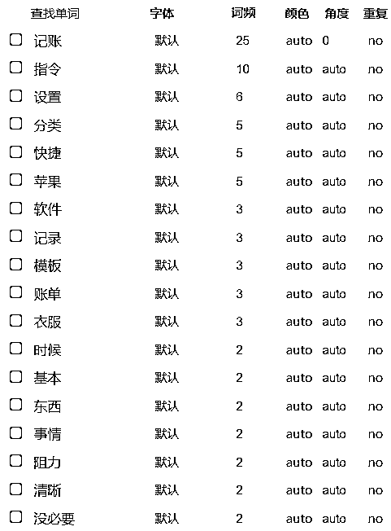
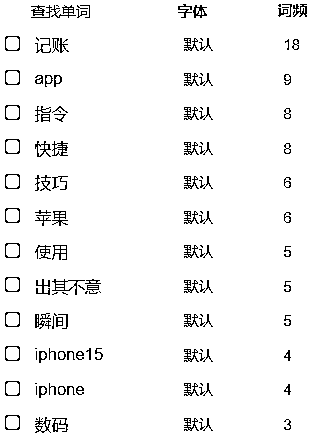

来源：https://ktuszl372b.feishu.cn/docx/GSEad4ANwo9ZJAx4gvOcApbjnIc
一个快捷指令，居然能在小红书卖19.9？而且销量还非常不错？这是怎么做到的？
先了解一个概念，什么是快捷指令？适用于 iPhone 和 iPad 的快捷指令是一种可让你使用 App 完成一个或多个任务的快捷方式。“快捷指令” App 可让你创建包含多个步骤的快捷指令。例如，你可以构建一个“冲浪时间”快捷指令来获取冲浪报道、提供预计到达海滩的时间以及播放冲浪音乐播放列表。
刚好我现在也参加了第三期的风向标拆解，那就趁机来给大家分享一下这个垂直类目到底是什么；同时也来讲讲，作为一个没有技术加持的普通人，我们是否可以复刻这个项目。
话不多说，全程干货，建议喝杯美式，美美地看完后动手开干！
Hello，我是 Leeka，8-9 月抖音图文航海的教练，12月 RPA 航海的教练
鉴于这次的拆解工作也涉及了很多重复的、有逻辑性的工作，所以我的机器人们也会加入本次的拆解工作，确保大家能从更微观层面了解到这个账号、这个类目和这个赛道。
这次，我并没有打算拆解多个账号，因为在找对标的时候，从始至终就只发现了一个表现异常突出的账号，而且这个账号的数据超越了 99% +的同行
那么我想，拆解这样一个极具代表性的账号，就足以说明用户需求了。
小红书账号：是Cayson
小红书粉丝：1.5w
主 营 商 品：iPhone 记账快捷指令
（以下数据来自灰豚）
①他用的并不是全新的账号
2023 年 11 月 7 日，他的账号粉丝数是 534，鉴于之前的相关内容已经被隐藏起来了，无法得知之前的赛道。
但可以知道的是，他并不是拿一个完全的新号来做内容的，所以，只要咱们手上的账号没有严重违规、被限流过，正常的老账号也是可以继续使用的。
② 爆款不是偶然
从他最近的 10 篇笔记来看，并不是每一篇都是爆款，但基本上每2 - 3 天都会出一个爆款，说明这个赛道是可做的，当然，从爆款的笔记也能看到，博主持续在更新迭代自己做笔记的逻辑。坚持是有用的！
③不要迷信发布时间段
从灰豚上的数据可以看出，博主发布时间是完美避开了周一（也可能是他周一确实很忙，哈哈哈）
但是，他的粉丝最活跃的时间段恰恰就是周一的 21:00，而他除了周一外，其余时间都在发布笔记。
不过，因为小红书的长尾流量机制，最终并没有影响他的笔记流量
同时，他也似乎在试着寻找最适合发布笔记的具体时间段，显然是每天 21:00 后，大家更容易冲动消费些。
所以这也告诉我们：不要纠结于周几发布笔记，也不要执着每一天哪个时间段发布笔记更重要
重要的是——你发笔记了吗？
④粉丝画像分析
这个博主主营的是 iPhone 手机的记账快捷指令。根据鹅智库的相关统计，iPhone 用户群体，年轻女性占比更高。

而从他账号的粉丝画像来看，确实是年轻女性占比更高一些，而这些年轻女性也刚好跟博主发布的笔记赛道（美食类）有重合。
在小红书看完博主的相关信息后，我并没有立即搜刮他的全部信息，而是默默打开了 B 站，想着也许可以在 B 站找到类似指令的开发思路，结果，你猜怎么着？
博主本人在 B 站也有同名账号，而且只有唯一一条视频，还是爆款。目前这个账号有 197 粉丝，视频是 2023 年 11 月发布的，目前 8.5w 播放，妥妥的低粉爆款。
而这个视频的评论区下也是遍地开花，主要分成几类：
1、安卓手机自己 root
Root，就是让某人重新得到安卓的最高权限，然后帮助用户越过手机制造商的限制，卸载本身预装的app，或执行需要系统权限的动作。
Android 系统的 Root 与苹果 iOS 系统的越狱类似。
2、觉得没必要的
3、想要白嫖指令的
有一说一，用 B 站来学习技能的人，通常动手能力都非常强。而且本身平台的赛马机制，也是鼓励大家分享更多干货的，所以，博主的这点技能，在 B 站并不能打。
但不得不说，记账这个快捷键功能的需求，确实是存在的。
还有一个值得注意的点是：视频是 2023 年 11 月 7 日在 B 站发布的，而这个时间段，刚好也是博主做小红书的时间
我又回顾了一下，他第一篇关于快捷指令的小红书笔记，是在 2023 年 11 月 11 日发放的。此时他 B 站视频仅仅有 3 个评论，都是求指令的。博主嗅到了这个主题的风口，于是到竞争相对较小的小红书平台发笔记。
下方是另外一位同样利用苹果自带的快捷指令+飞书多维表格，做出的记账指令在B站的销量。四个字：非常惨淡。
所以找到需求很重要，但是选择发布平台同样也很重要。
好的，我们回到小红书上，因为平台的展现规则，用户更多地需要通过搜索来快速找到自己想要的内容，所以在小红书上做 SEO（搜索优化）还是非常有必要的。
我先拿到他的 3 篇爆文来进行分析，笔记发布时间分别是 2024 年 1 月 16 日、27 日和 28 日的，预估阅读量都在 3w+，是他粉丝量的 2 倍，这种笔记就很有被分析的必要了。

分析一下这 3 篇爆文的相关话题：
#iphone隐藏功能# #快捷指令# #记账app# #记账app分享#
#记账# #iphone小技巧# #快捷指令# #记账app#
#数码大玩家# #记账# #iphone15# #快捷指令# #出其不意的苹果瞬间#
这3篇爆文都使用了两个相同的话题，那就是#记账 和 #快捷指令

因为博主的爆文（预估阅读超过 3w 的，粉丝量的 2 倍以上）只有 3 篇，如果只是分析爆文的内容，那数据量还是不太够
为了能让数据更有参考价值，我选择扩大了参考笔记的样本，把第三方平台预估 1w+ 阅读量的笔记，全部拿过来进行分析。符合条件的笔记共 9 篇：
被问爆N次！苹果原生💰自动识别记账爽飞
不是，iPhone这么宝藏的功能大家都不知道？
我宣布！iphone自动记账！搞定啦！
截图为证❗️iPhone出厂自带记账功能太绝了
我去❗️iPhone7年前就有的功能！
出门吃个饭❗️居然解锁了iPhone自动记账！
我能用到下辈子！iPhone原装自动记账太绝了
这辈子不会卸载的苹果自动记账软件！
苹果原生软件记账💰自动识别金额❗️真绝
下方是微词云的分析结果，记账出现了7次。
正文更多是在讲述“为什么要养成记账的习惯”，“记账有什么好处”，“为什么大家坚持不下来”等等
划重点：这些笔记其实就是瞄准了用户的痛点——知道记账很有必要，但是市面上的app需要太繁琐的步骤，不利于个人养成记账的好习惯，从而再引出产品本身。
为了扩展笔记内容的多样性，博主还会搭配各种各样的生活场景，来讲述这个用户痛点，譬如：吃饭、买衣服等等
将用户可能遇到的消费场景，通通用文字和图片、视频的形式展现出来，进一步加深用户的想法：我有这个痛点，我需要这个产品来解决我的痛点。
通过微词云的分析可以看到，#记账 出现了 9 次，而#app 则出现了 9 次，详细的可以参考下方截图。

很明显，博主铺的主关键词就是【记账】
我们还可以看到，笔记的二级关键词是：苹果、快捷指令、app
这里就有个问题了：明明是卖的苹果的快捷指令，为什么要带“ app ”这个关键词呢？
这就是买家跟卖家的立场不同了，很多苹果用户甚至不知道快捷指令还能这么使用，她们的需求只是想找到一个好用的【记账 app】，因为此时的她们还不知道苹果有自带的快捷指令。
说白了，就是这就是用户的教育成本，这个指令能实现记账 app 的相关功能，而且更加无痛，更容易坚持，这时候，用户就产生了强烈的购买欲望了。
更多 SEO 的基本常识，可以看看往期的 抖音SEO航海手册
虽然小红书的 SEO 策略跟抖音的不同，但从博主自己实践的情况来看，持续铺关键词还是非常有必要的。
实际上，早在 2023 年 2 月 19 日，就已经有 Twitter 博主用 Siri 帮忙在 notion 上记账了。写了个小玩意儿。。让Siri帮我在Notion上记账（拜托了GPT）
而在 2023 年 2 月 22 日，github 上就有博主复刻了：怎么让 siri 帮我记账 (不推荐使用，Just for fun)。
其实用 Siri 和用快捷指令的原理都差不多，把 Siri 换成快捷指令，也是为了保障个人隐私，把 Notion 换成飞书，更是本土化的设置了。
这个产品的整体的逻辑就是：通过快捷指令捕获到相关的数据，包括金额、花费类目、支出/收入、备注（通过用户输入文本实现）
为了能让做出来的表格更加直观，可以提前在飞书上设置不同类目每月的预算，以及设置好相关的分析报表等。
至于如何将快捷指令获取到的信息，写入飞书的多维表格，就是要靠代码实现了。
以上就是这个快捷指令产品的整体逻辑以及在小红书上的流量运营，下面我来讲讲类似的产品到底可以怎么做以及如何核算成本并放大来做。
登陆飞书应用后台：https://open.feishu.cn/app
点击【创建企业自建应用】并填写相关的信息。
登陆飞书文档并创建【多维表格】：https://ktuszl372b.feishu.cn/drive/home/
我在模板的基础上修改了一下下，更符合自己的使用习惯。
【日期】字段，需要单独配置一下，配置参数如下：
下载完【快捷指令】后，点击右上角的【+】→点击【添加操作】→【所有操作】→飞书的相关设置。
譬如下方截图，就可以设置一个刷牙倒计时的快捷指令，确保每次刷牙都在2分钟。
在往飞书里填入数据的时候，我们可能会需要用到几个步骤，【要求输入】、【获取剪贴板】、【获取变量】、【获取URL内容】
后续我们会需要用到飞书 API 和 URL ，可能有些小伙伴还不知道什么是 API 、URL ，我简单科普一下。
API 即 Application Programming Interface，直译过来的意思就是：程序之间的接口。我更倾向于把 API 理解为，程序之间的合约。
URL 是 Uniform Resource Locator 的缩写，即统一资源定位器，是因特网上用于指定信息位置的表示方法，通过它就能找到网上的某个你要的资源。
这样，有了 API 就不需要我们打开软件，直接在内部就传输了相关数据，而 URL 则提供了数据具体填写的地方。
从快捷指令获取到的内容，我们设置成变量，通过飞书的 API 接口，填写到具体表格的 URL 里，这样我们整个记账过程就完成啦，具体的步骤如下：
【收到短信】这个是作为通用的，因为我们是通过双击来快速启动【快捷指令】，所以【快捷指令】就会获取当前页面的金额信息。
飞书 API 的相关开发文档，请参考官网：https://open.feishu.cn/document/home/course
当设置好了快捷指令以及配置好飞书的多维表格的 API 后，苹果的记账快捷指令就设置好啦~实现的效果如下：

这些操作可能确实有些繁琐，没有编程基础小伙伴们如果觉得太麻烦的话，这里有一个现成的快捷指令，大家可以直接获取，参考一下它的设置，或者也可以直接使用：iPhone自动记账快捷指令
如果觉得文字版本还是不够清晰，想要看视频版本的话，可以跳转到这边：尝试教你用飞书记账-ios快捷指令3
首先，截图里如果有其他数字的话，会导致不能直接识别金额，需要人工二次复核，麻烦；
其次，涉及到金额的数字，用截图，会有隐私泄露的风险，不建议在记账这样敏感操作中使用截图。
因为飞书的多维表格功能实在是太强大了，能够将所有的数据可视化操作，一看就能知道这个月在哪个方面花费最多，哪个部分超预算等等。
因为对 Excel 的印象太深刻，很多苹果用户甚至会直接卸载 IOS 原生态的 numbers ，它的作用跟 Excel 类似，具有画布界面，在同一个界面可以看到多个表格。但是相较飞书的多维表格而言，还是逊色了些许。
相关教程也给大家找到了：快捷指令+numbers自动记账，优化了一下，可以实现全年记账啦
YouTube 博主直接做好了现成的模板：Simple Notion Workout Tracker
Notion全自动图书管理模版 升级阅读体验 自动计时、统计、摘抄、手机适配
【干货】Notion不需要那么复杂！3个适合新手的简单模板 | 习惯养成+课表GTD+读书笔记 | 不做完美的setup，notion还能怎么用？| 新手教程
【Notion系统】All-in-One 高效管理空间
我如何用Notion管理我的財務💰（上）| Notion 分享
我如何用Notion記帳💰（下）| Notion 教學
2024年度計畫✨手把手帶你做！把自律變簡單的人生管理系統 💻 Notion 模板 不藏私免費公開｜瑀禾ON DUTY
这个项目无论是针对有编程基础的人，还是完全不懂编程的小白，都只需要花费一定的时间成本而已。
在拆解这个账号之前，我也没有任何的编程基础，但只要花时间花精力去找到教程，整理起来，难度也不会太大，甚至为了方便大家操作，我也把已经整理好的快捷指令奉上了。
剩下的还是保持日更的时间成本而已，定时回复后台私信即可，这一点可以在账号简介以及产品介绍上写清楚，以及可以设置自动回复，备注私信回复时间即可。
建议是大号搭配小号的方式，小号做各种的引流操作，大号就按照 SEO 的要求，保持好更新频率即可。
为了方便答疑，也可以建一个小红书群聊，小号负责在里面进行各种引导下单 or 其他引流动作。
只要我们跑通了最小闭环，那么就可以借助 RPA 来矩阵化，毕竟这中间涉及到的重复且有逻辑性的工作太多，太适合 RPA 介入了。以下是 RPA 应用的思路分享：
还是上述说的，小红书就是一次开卷考试，高分答卷都塞到你面前了，我们唯一需要做的就是找准对标账号或是笔记，然后对这些相关的笔记进行一通的分析，标题用了什么样的手法？主关键词是什么？二级关键词是什么？创作的思路是什么？
我们可以利用 RPA 抓取到博主的相关笔记，然后再根据笔记相关的指标，把标题、正文、话题等，放入微词云进行分析，这样就能拆解出主关键词和二级关键词了。
可以是找到对标账号的图，直接进行去重，详细 RPA 操作可以参考如何利用影刀RPA进行图片去重？@Leeka
但我更鼓励大家低成本原创，不需要去重，只需要在图片上加上我们之前用 RPA 整理好的主关键词和二级关键词，这样图片的 SEO 也做好了。
制定好通用的视频剪辑模版后，我们就可以利用 RPA 来替换素材，添加智能字幕的方式，就可以实现批量剪辑视频了。
星球里相关讲 RPA × ChatGPT 的帖子很多了，我简单介绍一下思路。我们可以通过提前准备的提示词（包括主关键词、二级关键词、应用场景等），用 RPA 来指挥 ChatGPT 批量生成相关的小红书笔记内容。
当然，这些内容还需要人工二次润色，这样就能快速生成笔记内容，确保我们的矩阵账号能保持日更了。
在矩阵化之后，我们需要保持一定的更新频率，大量的图片、文字等，这时候就很适合让 RPA 介入，譬如我们可以通过编写一个自动将作品同步到多平台定时发布的 RPA 机器人。
后续我们再根据市场给予的反馈再调整我们的账号运营策略。
以上，就是我拆解的全部内容，希望会对你有所帮助，如果你觉得我拆解得还不错，想要跟我多交流的话，欢迎链接：Leeka56。